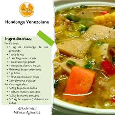

sopa de mondongo venezolana
ingredientes
- 1kg de mondongo
- 1 cebolla grande picada
- 1 pimenton rojo picado
- 3 ramas de cilantro fresco
- 4 dientes de ajo triturados
- 1 aji dulce
preparacion
- Hierve el mondongo en olla a presión con agua y sal por 45 minutos hasta que esté suave.
- Haz un sofrito en una olla grande con la cebolla, el ajo y el tomate.
- Agrega agua al sofrito, echa el maíz y la zanahoria, y cocina 10 minutos.
- Añade el mondongo cocido, las papas y la yuca. Cocina todo 20 minutos más.
- Rectifica la sal, agrega cilantro picado y sirve
